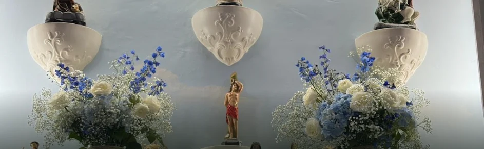

Diretório AxéCloud. Casa mapeada
AEUPU - Associação Espiritualista de Umbanda Pai Urupijaba
Campinas, SP
Sou responsável por esta casa- Tipo de página
- Perfil público
- Localidade
- SP
- Situação
- Listado

Perfil públicoAxéCloud
Diretório AxéCloud. Casa mapeada
Campinas, SP
Sou responsável por esta casa
Dados disponíveis
Confirme diretamente com a casa
Endereço
R. Nova Iorque, 343 - Parque São Quirino, Campinas - SP, 13088-118
WhatsApp não disponível
Horários habituais
Gira aberta ao público
Atendimento conforme agenda
Atendimentos espirituais
Descrição publicada pela casa.
Sob consultaInformações e disponibilidade.
Sob consultaConfirmação antes da visita.
Sob consultaPara dirigentes e zeladores
Assuma os dados públicos e organize financeiro, filhos de santo, giras e comunicação em um ambiente privado.